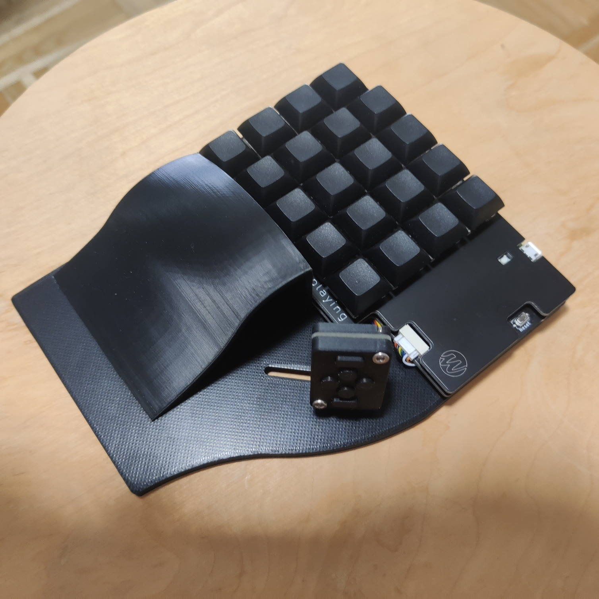

The Keypad
Le Keypad est un accessoire USB qui fonctionne nativement sous Windows, macOS et Linux, sans aucun pilote à installer.
Il est entièrement programmable et réparable par son propriétaire. Le firmware repose sur QMK, et les composants électroniques sont courants et peu coûteux.

Productivité
Utilisable pour le montage vidéo ou la retouche d’image, il se configure facilement pour automatiser les tâches laborieuses et adapter l’ergonomie du poste de travail à ses besoins.
Les touches situées sous le pouce peuvent par exemple servir à faire défiler un document, ou à changer d’outil rapidement.
Jeu
Les boutons supplémentaires sous le pouce se configurent pour le déplacement, le défilement de la carte, ou pour signaler une action en cours à ses coéquipiers. Six boutons de plus, à configurer comme on veut.
Informations techniques
Le cœur du keypad est un microcontrôleur de la fondation Raspberry, le RP2040 : un double cœur reprogrammable par l’utilisateur.
Les vingt touches de la face avant sont montées sur supports échangeables à chaud, au format Cherry MX : chacun peut y placer les interrupteurs de son choix.
Le firmware QMK permet d’enfoncer plusieurs touches simultanément, avec un temps de réponse faible
Les boutons situés sous le pouce sont fabriqués par Omron et supportent dix millions de pressions.
Les interrupteurs sont montés sur supports échangeables à chaud Kailh, et se remplacent sans outil par des modèles Cherry, Kailh, Gateron ou tout autre compatible.